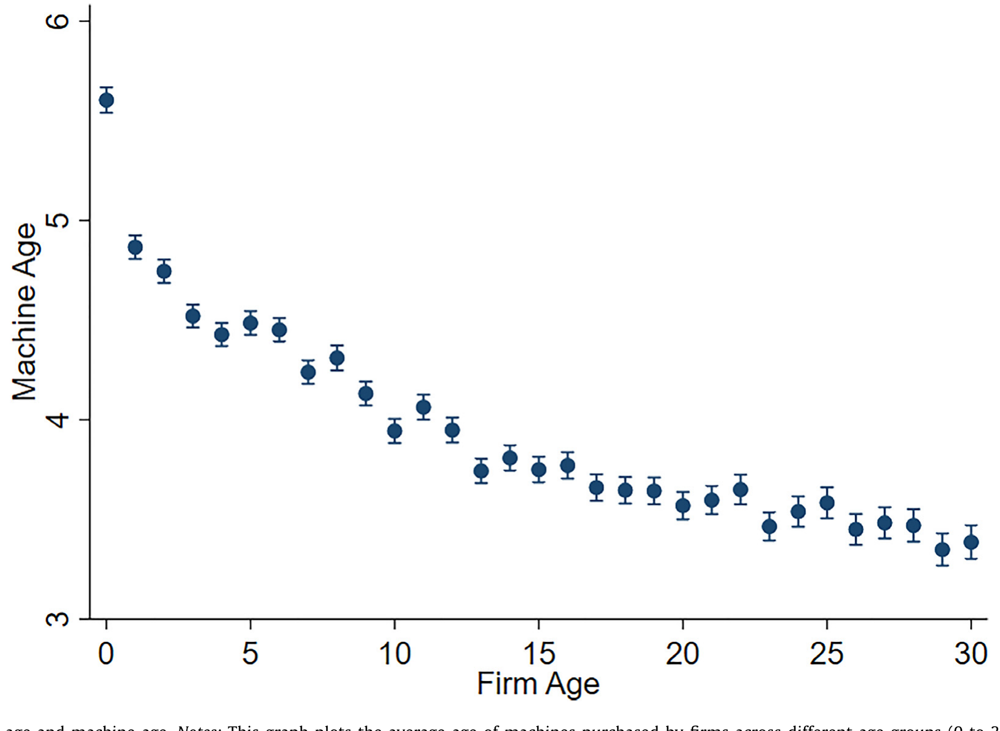
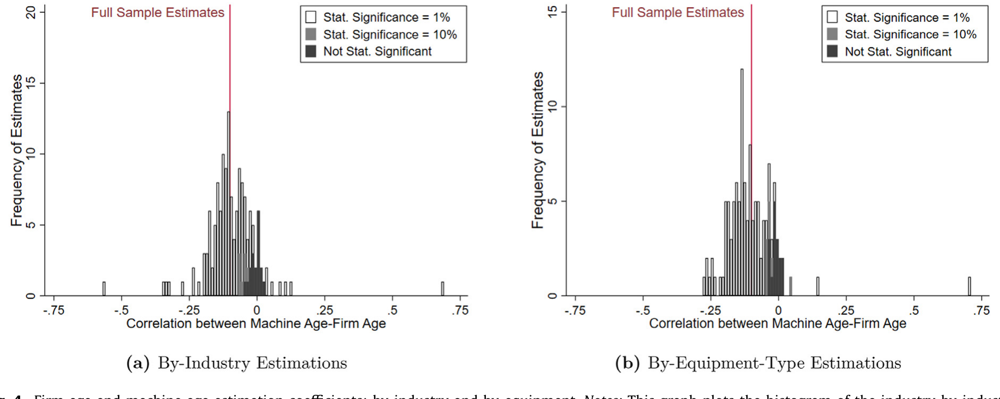
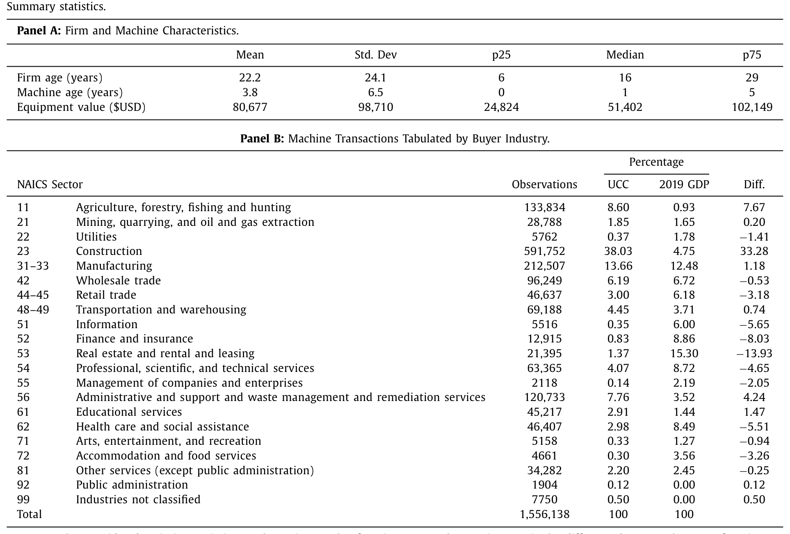
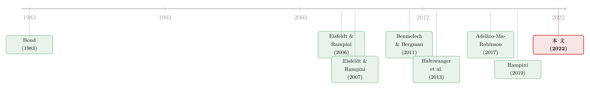

年轻的公司，老去的机器：一台二手冰淇淋车里的资本再配置
本文读的是 Ma, Murfin & Pratt (2022, JFE)：在美国，年轻公司系统性地买入年长公司用旧了的物理资本——平均而言，一台被再配置的机器，会卖给一家比上一任主人年轻 6 岁的公司。作者用 1.56 百万笔设备交易证明这一模式无处不在，并论证它由金融约束驱动；更妙的是，本地二手资本的供给，反过来决定了谁能创业、雇多少人、投多少钱——而老公司也因为身边有了年轻买家，更快地更新了自己的设备。
1 引言：从一台二手冰淇淋车说起
先讲一个许多人都听过、却很少有人当真去想的故事。
1978 年，两个年轻人想开一家食品店。他们最初的计划，其实是做百吉饼（bagel）——可一打听，做百吉饼的机器太贵，二手的也找不到便宜货。于是他们退而求其次，在本地翻到了一辆二手的冰淇淋车和一台二手冷冻机，价格合适。就这样，世界上少了一家百吉饼店，多了一个叫 Ben & Jerry's 的冰淇淋帝国。
这个故事好笑，但它藏着一个一点都不好笑的经济学问题：一家新公司做什么、怎么做、能不能做成，竟然可能取决于它身边恰好有没有一台合适的、用旧了的机器在出售。 我们习惯于把创业想象成一个关于"创意"和"人"的故事，却很少把镜头对准那些沉默的、生了锈的、被上一任主人淘汰下来的物理资本。
这正是本文要做的事。作者把两条原本各自独立的研究线索拧到了一起：一条是年轻公司——它们创造了美国经济中大部分的新增就业（Haltiwanger et al., 2013），对本地需求冲击反应极快（Adelino et al., 2017）；另一条是资本再配置（capital reallocation）——也就是一台机器从一家公司转手卖给另一家公司，这件事在总投资里占了相当大的份额（Eisfeldt and Rampini, 2006），而它做得好不好，被认为是各国发展差距的重要来源（Hsieh and Klenow, 2009）。
把这两条线索连起来的那个"接头"是什么？作者给出的答案干净得近乎朴素：
在同一个县里，年轻公司不成比例地买走了老公司用旧的设备。
接着，一个自然的问题是——这只是一个有趣的相关关系，还是真的会改变什么？本文的全部张力，都在于把这个看似平淡的事实，一步步推成一个有因果含义、有福利含义的故事。
2 一个被忽视的事实：年轻公司买旧资本
我们先把这个事实本身夯实。
作者手里握着一份相当少见的数据（详见第 4 节），它能精确到每一台机器的生产年份和买家的成立年份。于是第一步，就是把"机器的年龄"对着"公司的年龄"画一张图。
结果非常清晰。刚成立的公司（0 岁）买入的机器平均 5.6 岁；1 岁的公司买的机器降到 4.9 岁；到公司 10 岁时，它买的机器只有 3.9 岁了。也就是说，公司越年轻，它买的机器越旧——而且这条曲线是单调、平滑、连续地下降的。

Figure 2: Firm age and machine age. Notes: This graph plots the average age of machines purchased by firms across different age groups (0 to 30 years
这里有个关键的反驳要先挡住：会不会这只是"新 vs. 旧"的二元区别——年轻公司买不起新机器，所以只能买二手货，仅此而已？不是。作者把样本限制到只看二手交易，这条向下倾斜的关系依然成立（附录 Figure A1）。换句话说，资本在不断地、连续地从"老公司"流向"年轻公司"，像一条年龄的瀑布——不是简单的"新车 vs. 二手车"，而是一台机器在它的生命周期里，被一茬比一茬更年轻的公司接力使用。
这个差异有多大？作者算了一笔账：把机器估值对机器年龄做回归（控制型号和年份固定效应），机器每老一岁，价值掉 $4374。一家成立头一年的公司，购置资本的中位数价值是 $43,289。而从初创公司到 30 岁公司，平均机器年龄差了大约 2.5 年，折算成价值就是 $10,935——相当于购置价格的 25%。这不是一个统计上显著、经济上可以忽略的小数字。
然后，作者做了一件让这个事实更可信的事：他们不满足于跨公司的比较（不同公司之间的差异，总可能被各种看不见的异质性污染），而是追踪同一批公司随时间的购买行为。具体做法是，只留下那些（i）至少在 10 个不同年份有交易、且（ii）第一次交易时还不到 3 岁的公司，看它们每一次添置设备时买的机器有多旧。
这一步漂亮在哪？它把公司本身的特征（行业、地理、老板的脾气……）全都"固定"住了，剩下的唯一变化就是时间的流逝——这是干净的外生变化。结果如图所示：一家公司的第一次资本购置，平均涉及一台 5.2 岁的机器；到它第五次购置时，机器平均年龄已经降到 3.7 岁。在公司成立最初的几次交易里，机器年龄的下降尤其陡峭。
最后，作者还要堵住"这只是某几个特殊行业的故事"这条退路。他们把样本切成 147 个行业（三位 SIC）和上百种设备类型，逐一跑回归
$$ \ln(1 + \text{MachineAge}_i) = \beta\,\ln(1 + \text{FirmAge}_i) + \varepsilon_i $$
然后把所有这些 \(\beta\) 的分布画成直方图。在 80% 以上的行业和机器类型里，年轻公司买旧资本的关系都在统计和经济上显著。这不是个别行业的怪癖，而是一个无处不在的规律。

Figure 4: Firm age and machine age estimation coefficients: by-industry and by-equipment. Notes: This graph plots the histogram of the industry-by-ind
到这里，事实立住了。但事实越干净，那个问题就越尖锐：为什么？
3 真正关键的一步：为什么偏偏是旧资本？
面对"年轻公司买旧机器"，最容易想到的解释是技术——也许年轻公司天生需要不同的技术（Bond, 1983），新行业用新机器、老行业用老机器。但作者明确说，证据不支持这种基于技术需求差异的解释。
真正关键的一步，是把镜头转向金融约束（financial constraints）。
这里的逻辑来自 Eisfeldt and Rampini (2007) 和 Rampini (2019)，初看有点反直觉，值得慢慢拆。我们通常以为：新机器抵押价值高，银行更愿意贷款，所以新机器反而更"好融资"。但 Rampini (2019) 指出，在一个抵押品不能被完全质押（imperfect pledgeability）的世界里，事情要反过来看——越耐用的资产，价格越高，而这个"价格高"的效应，盖过了它"抵押价值高"的好处。 结果就是：越耐用的资本（在本文里，就是越年轻、剩余寿命越长的设备），需要的首付（down payment）越高。
对一家手头紧的初创公司来说，结论就顺理成章了：它会主动选择更旧的机器，用更高的未来使用成本（user cost），去换取更低的当期首付。这不是"买不起新的只好将就"，而是一个在约束下的最优选择——把稀缺的现金，从"先付的钱"里省出来。
作者用了一连串证据来给这个金融故事"验明正身"：
- 信贷越紧，关系越强。 借用 Gilje et al. (2016) 那个基于页岩油冲击的银行分支流动性工具变量，作者发现：在信贷更紧的时间和地区，公司年龄与资本年龄之间的关系更强。
- 能租赁的地方，扭曲更小。 Eisfeldt and Rampini (2009) 论证过租约（lease）相比贷款有"收回优势"，能提高资本的可质押性、缓解金融约束。本文正好发现：在租赁市场里，公司年龄与资本年龄的联系更弱——因为租赁恰好松开了那道约束。
- 跨国佐证。 这也呼应了 Benmelech and Bergman (2011)：在债权人保护更强、信贷更可得的国家，航空公司给机队配的是更新的飞机。
把这几块拼起来，金融约束这把"钥匙"就插进了锁孔。关于"资产寿命—杠杆—融资"这条更一般的线索，我之前聊过一篇（见《飞机要换，债也要"换"：把"期限匹配"拆回资本的年龄》），它和本文是同一片土壤里长出来的两株植物。
4 数据：从一张留置权登记表里"看见"每一台机器
要讲清这个故事，需要一种近乎奢侈的数据——你得同时知道：这是哪一台机器（精确到序列号）、它多大了、谁买的、买家几岁、在哪个县。这样的数据从哪来？
答案藏在一个不起眼的法律角落：统一商法典留置权登记（uniform commercial code, UCC, financing statements）。当一家公司用贷款买设备、设备作为抵押品时，放贷人有强烈动机赶紧去登记一份 UCC 文件——因为一旦借款人违约、多个债权人争抢同一台机器，谁先登记谁优先。这套优先权规则，逼着放贷人忠实、及时地把抵押品信息记录下来。
一家叫 Equipment Data Associates (EDA) 的公司，把这些公开的登记文件清洗、整理，再用 Dun & Bradstreet 的信息补上买家的行业和年龄。Figure 1 就是一份真实的样本：北卡罗来纳州，一台 Vermeer SC40TX 树桩粉碎机，2018 年被一家叫 Hoss Tree Works and Logging 的公司买下——登记表里有 make、model 和那串独一无二的序列号，正是这串序列号，让作者能像追踪一个人的身份证一样，追踪一台机器在历次交易中的流转。
完整数据覆盖 1990–2017 年，超过 7.8 百万笔交易（5.3 百万笔销售、2.6 百万笔租赁），涉及 220,000 多种型号、113 个大类、333 个细分设备类型，从建筑设备、复印机、叉车，到伐木和木工机械。作者剔除掉缺公司名的、非终端用户（经销商、拍卖行、金融公司）、政府买家之后，主样本剩下 1.56 百万笔购置观测。

Table 1
Table 1 的描述统计里有几个数字值得记住：机器年龄的均值（中位数）是 3.8（1）岁，公司年龄的均值（中位数）是 22.2（16）岁。而 Panel B 暴露了这份数据的一个重要特征——它超配了资本密集型行业（建筑业占了惊人的 38%，远高于其 4.75% 的 GDP 份额），低配了服务业（金融保险只占 0.83%）。这是一把双刃剑：好处是你能在重型设备上把"机器年龄"测得很准，代价是结论的外推性要打个折——这一点作者自己也坦承。
这份数据"看得见"的，是那些以设备为抵押、登记了留置权的交易。全款买、或不需要质押的小设备，会系统性地从样本里漏掉。后文若干"被低估"的量级（如机器更替概率），根子都在这里。
5 识别策略：把"本地二手资本"变成一个可度量的供给
事实和机制都有了，接着是全文最硬核、也最关键的一跃：本地二手资本的供给，会不会反过来塑造创业活动本身？
但这里有个绕不开的内生性陷阱：本地"潜在的二手资本供给"，很可能和当地的公司动态因为各种原因相关。比如，五年前那场推动大家购置设备的行业景气，今天可能仍在以与"机器再配置"完全无关的方式影响投资。怎么把"二手资本市场的因果效应"从这些竞争性解释里剥出来？
作者的第一招，是巧妙地构造一个本地二手资本供给的代理变量。核心洞察是：今天市面上有多少台 \(k\) 岁的二手机器可买，取决于 \(k\) 年前这个县里卖出过多少台新机器。举个例子——2000 年 Durham 县卖了 100 台新机器，那么到 2005 年，这就构成了 Durham 当地"5 岁二手机器"潜在供给的一个度量。作者正是用这种"历史上的新机器购置"来度量本地 5–10 岁的存量资本，而且这个度量之所以可信，前提是作者先用序列号直接证明了二手机器交易在很大程度上是本地活动——机器不会满天飞，所以"本地供给"才有意义。
光有这个代理还不够。作者还沿三个维度做对照，把因果效应从竞争假说里逼出来：
第一，用老公司做对照。 既然年轻公司才对旧资本有不成比例的需求，那就拿同一地区、同一行业的老公司当基准。如果是金融约束在起作用，那么对本地二手资本供给敏感的，应该主要是最年轻的那批公司，而且这种敏感性应随公司年龄递减。
第二，用"重量—价值比"度量机器的可搬运性。 作者证明，重量价值比越高的机器，交易越本地化（搬不动）。逻辑随之而来：如果"本地"资本可得性真的重要，那么它对年轻公司投资的影响，应该在那些最难搬运的机器上最强；而其他竞争假说在这条维度上没有明确预测。
第三，用机器的"经济寿命"。 有些设备类型很少会在 5 岁以后还被再交易。如果年轻公司的投资真的靠 5–10 岁旧资本的可得性来驱动，那么在那些"五岁以后基本就不再流通"的机器类型里，效应应该微乎其微。
这三个维度，每一个都是一道"安慰剂检验"——它们要求效应只出现在金融约束理论预测会出现的地方。这种"在该有的地方有、在不该有的地方没有"的交叉验证，比单一一个系数显著要有说服力得多。
6 主要结果：从机器选择，一路推到创业与就业
有了这套识别策略，结果就可以一层层往外推。
第一层，机器选择（intensive margin）。 作者估了一个机器购置的选择模型：在某季度做出购买决定的条件下，最年轻的公司对本地二手资本供给显著更敏感——本地有什么样的旧资本，就更可能去买什么类型的设备；而这种敏感性随公司年龄递减。更关键的是，这种影响集中在高重量价值比、长市场寿命的机器上——恰好印证了上面三个维度的预测。Ben & Jerry's 的故事，在数据里有了统计学的回声。
第二层，投资的广度与速度。 把度量加总到行业层面后，作者发现：那些在本地二手资本丰沛时迈出第一步的年轻公司，在随后三年里投资更多，而且投资的设备种类更多样。最反直觉的一个发现是——能用上二手资本的公司，反而更快地"毕业"到购买新设备。二手资本不是把它们困在低端，而是帮它们更快地长大。
第三层，创业与就业（extensive margin）。 本地二手资本更充沛，会带来更高的初创公司就业。也就是说，二手资本不是在替代劳动——它在帮年轻公司同时雇人和买设备。本地资本可得性，因此成了一种此前未被记录的"区位禀赋"（locational amenity），可能正是 Glaeser et al. (2010) 所记录的"创业活动在特定行业—地点扎堆"现象背后，一块被忽略的拼图。
这里值得停下来想一想它的政策含义：如果二手资本供给是连接"本地金融条件"和"创业活动"的一个中介变量，那么我们对"信贷如何影响创业"的理解，可能漏掉了一整条暗线。关于"新资本买不到时年轻公司受伤最深"，本博客评述过一篇姊妹篇（见《新机器买不到的那一年：一场供给短缺，如何让"从不买新设备"的年轻公司受伤最深》），它和本文恰好是同一枚硬币的两面。
7 反转：老公司也是赢家——一段共生关系
到这里，故事似乎是单向的：老公司"喂养"年轻公司。但真正让这篇论文完整的，是最后的反转——老公司也从年轻买家身上得到了好处。
作者用"年轻公司占某行业—县—年就业的份额"（YoungFirmShare）来度量本地对二手资本的潜在需求，然后追踪老公司更替（卖掉再换新）特定设备的倾向。妙处在于：因为同一行业内不同设备会面对不同的本地年轻买家需求，作者可以把固定效应做到县—行业—时间这个相当细的层级，把一大堆混杂因素吸收掉。
结果是：当身边的同类设备使用者更偏向年轻公司时，老公司卖出并更换设备的速度更快。 把 YoungFirmShare 从 0 拉到 100%，三年、四年、五年更替概率分别提高 0.017、0.017、0.009。这些数字的绝对值看着小，但要对照基准——平均的三、四、五年更替概率只有 0.01、0.014、0.017（且因序列号匹配不完美而被低估），所以这相当于把"快于平均速度的更替概率"翻了一倍还多。
于是一幅共生图景浮现出来：年轻公司因为身边有便宜的旧资本而得以诞生和成长；老公司因为身边有年轻买家接盘，得以更快地把旧设备出手、换上新的。一老一少，在同一片地理空间里，通过二手设备的供给与需求，结成了一种对称的、互利的关系。作者由此提出一个新颖的猜想：最小化资本再配置成本，或许能为一种全新的产业集聚——跨年龄世代的集聚——提供动机。
8 文献脉络
把这篇论文放回它生长的土壤里，脉络其实很清晰。
最早的种子来自国际贸易和耐用品理论：Bond (1983) 研究异质性公司之间的二手设备贸易，Alchian and Allen (1964) 则提供了关于耐用品的古早直觉。但把"资本再配置"真正推上宏观—金融舞台的，是 Eisfeldt and Rampini (2006)——他们指出资本再配置是总投资的重要组成，且与流动性紧密相关。

接着，这条线索分出两支。一支沿着"金融约束如何扭曲资本选择"往下走：Eisfeldt and Rampini (2007) 的"新的还是旧的？"直接问了本文的核心问题，Eisfeldt and Rampini (2009) 加进了租赁与可收回性，Rampini (2019) 则给出了"越耐用、首付越高"的关键定价逻辑；Benmelech and Bergman (2011) 用航空业的跨国证据为这套理论做了实证背书。另一支沿着"年轻公司与就业"往下走：Haltiwanger et al. (2013) 确立了年轻公司在就业创造中的核心地位，Adelino, Ma and Robinson (2017) 揭示了它们对本地需求冲击的敏捷反应。
本文（Ma, Murfin and Pratt, 2022）站在的，正是这两支的交汇处——它用一个微观到序列号的数据，把"金融约束驱动的二手资本需求"和"年轻公司的创业与投资"焊在了一起，并加上了 Gavazza (2011) 关于二手资产市场交易摩擦的视角，落到一个关于本地共生与产业集聚的全新论断上。
评论与延伸（Q&A + 研究方向）
(a) 几个可能的疑问
Q：这跟"年轻公司就是买不起新机器、只能买二手"有什么本质区别？
区别在于它是一个最优选择，而非被动将就。Rampini (2019) 的逻辑是：越耐用的资本首付越高，所以受约束的公司主动选旧资本去压低当期现金支出，代价是更高的未来使用成本。证据上，纯二手样本里关系依然单调下降，且在信贷紧、不能租赁、机器难搬运时更强——这些都不是"买不起新车"能解释的横截面变化。
Q：用"k 年前的新机器购置"来度量今天的二手供给，会不会本身就内生？
这是全文最该警惕的地方，作者自己也点破了：五年前的行业景气可能以与机器再配置无关的方式延续到今天。他们的防线不是某个完美工具变量，而是三道交叉检验——效应应集中在最年轻的公司、最难搬运的机器、寿命最长的设备上。这种"该有的地方有、不该有的地方没有"的模式，竞争性解释很难同时复制，但它终究是间接论证，而非一个清洁的外生冲击。
Q：建筑业占了 38%，结论还能外推到服务业、科技创业吗？
诚实地说，外推要打折。这份数据天然偏重以重型设备为抵押的资本密集行业，对靠人力资本和无形资产的服务/科技初创覆盖很弱。所以"年轻公司靠本地二手资本起步"这个结论，在伐木、建筑、农业里很扎实，搬到软件公司就未必成立——那里的"资本"根本不进 UCC 登记。
Q：更替概率的量级（0.01 量级）是不是太小，小到没有意义？
绝对值确实小，但要看相对基准。作者明说这些概率因序列号匹配不完美、且 UCC 之外的交易会漏掉而系统性偏低；相对于
0.01–0.017的平均更替率，YoungFirmShare从 0 到 100% 带来的提升相当于把快速更替概率翻倍。读这种数字，比的是相对效应而不是绝对水平。
Q：年轻公司"更快毕业到买新设备"，难道不该是用了旧资本就被锁在低端吗？
这正是反直觉之处，也是金融约束解释的有力佐证。如果年轻公司用旧资本只是因为技术落后，它不该更快换新；但如果旧资本是用来省首付、渡过约束最紧的早期，那么一旦它靠这些资本活下来、长大、约束放松，自然会更快升级到新设备。结果支持的是后一种叙事。
Q：老公司"卖给年轻买家"的好处，会不会其实是在亲手培养自己的竞争对手？
作者也承认这是个悬而未决的问题——他们明说"产业结构如何影响在位者用廉价二手资本为自己未来的竞争对手播种，目前还不清楚"。本文测到的是更替速度加快这一局部好处，至于净效应（便利 vs. 养虎为患），论文留白，留给了后人。
(b) 几个可能的研究问题与提案
1. 二手资本市场与公司债/信用利差
【经济故事】既然金融约束驱动了对旧资本的需求，那么一家公司资产里"旧资本"的占比，可能本身就是它受约束程度的一个市场可见信号，进而影响其债务定价和回收率（旧资本残值低、可搬运性差）。
【可行性】中。可把 EDA 的设备年龄结构匹配到有公开债的公司，看资产"年龄结构"是否预测信用利差或违约后回收率。难点是 EDA 样本偏中小私营企业，与有债券的大公司交集有限；可退而求其次用银团贷款样本。
2. 外资持有人与二手资本的跨境再配置
【经济故事】当外资在某地的产业里占比上升，它们对资本年龄、可搬运性的偏好是否不同于本土在位者？外资是否更倾向买新、把旧资本"留"在本地二手市场，从而间接补贴本地创业？
【可行性】低到中。需要把设备交易数据与外资所有权数据库（如 Orbis）匹配，且 UCC 数据对所有权国别几乎没有覆盖，识别难度大。更现实的做法是用 FDI 进入的准自然实验，看本地二手设备供给与初创进入的变化。
3. 货币政策传导的"二手资本渠道"
【经济故事】加息抬高首付的影子价格，按本文逻辑，应当让受约束的年轻公司更向旧资本倾斜。那么二手资本市场是否构成货币政策影响实体投资的一个被忽略的中介？
【可行性】中。用 EDA 的高频交易数据，在 FOMC 冲击窗口前后看年轻 vs. 老公司购置机器年龄的差异变化，配合 Gilje et al. (2016) 式的本地信贷度量做交互。数据足够，识别可借力既有的货币政策冲击序列。
4. 二手资本流动性与资产价格
【经济故事】Gavazza (2011) 已论证二手资产市场的交易摩擦会影响资产价格。本文的"本地买家年龄结构"可以构造一个新的需求侧流动性度量：年轻买家多的地方，旧设备更好出手、折价更小。
【可行性】高。EDA 同时有成交价（EDA 估值）和成交速度（序列号追踪持有期），可直接构造按设备类型—地区的流动性度量，检验它是否预测二手设备的价格折让。数据现成，识别清晰。
5. 供应链/集聚的"资本年龄"维度
【经济故事】本文提出"跨年龄世代的产业集聚"猜想。一个可检验的推论是：老公司密集的地区，会内生地吸引更多需要旧资本的年轻公司进入，形成自我强化的集聚。
【可行性】中。用县—行业面板，看在位老公司密度（及其设备存量年龄）是否预测随后年轻公司的进入率，控制需求侧冲击。Census QWI 与 EDA 都能支持，难点在分离"集聚"与"共同的本地需求冲击"。
我的判断
这篇论文最让我佩服的，是它用一个朴素到几乎像常识的事实，撬动了一个很大的问题。"年轻公司买旧机器"——说出来谁都点头，但把它做成 1.56 百万笔、序列号级别、跨 147 个行业稳健的实证，再用金融约束理论给它一个统一的机制，最后推到创业、就业和老公司的更替速度，这是扎实的手艺活。Ben & Jerry's 那个开场，不是噱头，而是整篇论文的缩影：资本的"年龄"，是创业故事里一个被长期低估的主角。
对识别，我保留两点担忧。其一，本地二手资本供给的代理变量终究是间接构造的，三道交叉检验很聪明，但它们排除竞争假说靠的是"模式不一致"，而非一个真正外生的供给冲击——若能找到一个纯粹的、与本地需求无关的二手设备供给外生变动（比如某地大型在位者因无关原因集体退出、抛售设备），这个因果链会更无懈可击。其二，UCC 数据的选择性（重型设备、有抵押、有登记）既是它的力量也是它的边界，所有"被低估"的量级都提醒我们：样本之外的世界可能讲一个不同的故事。
我接下来最想看到的，是把这套"资本年龄"的视角接到信用市场上去：一家公司资产的年龄结构，是不是它受约束程度的一个可交易信号？以及货币政策收紧时，这条"二手资本渠道"到底替实体经济缓冲了多少、又把哪一类公司更深地推向了旧资本。这些，都是这篇朴素而漂亮的论文，自然递到我们手里的下一个问题。
参考文献
- Adelino, M., Ma, S., Robinson, D. (2017). Firm age, investment opportunities, and job creation. Journal of Finance 72, 999–1038.
- Alchian, A. A., Allen, W. R. (1964). University Economics. Wadsworth, Belmont, CA.
- Benmelech, E., Bergman, N. (2011). Vintage capital and creditor protection. Journal of Financial Economics 99, 308–332.
- Bond, E. W. (1983). Trade in used equipment with heterogeneous firms. Journal of Political Economy 91, 688–705.
- Eisfeldt, A. L., Rampini, A. A. (2006). Capital reallocation and liquidity. Journal of Monetary Economics 53, 369–399.
- Eisfeldt, A. L., Rampini, A. A. (2007). New or used? Investment with credit constraints. Journal of Monetary Economics 54, 2656–2681.
- Eisfeldt, A. L., Rampini, A. A. (2009). Leasing, ability to repossess, and debt capacity. Review of Financial Studies 22, 1621–1657.
- Gavazza, A. (2011). The role of trading frictions in real asset markets. American Economic Review 101, 1106–1143.
- Gilje, E. P., Loutskina, E., Strahan, P. E. (2016). Exporting liquidity: Branch banking and financial integration. Journal of Finance 71, 1159–1184.
- Glaeser, E. L., Kerr, W. R., Ponzetto, G. A. (2010). Clusters of entrepreneurship. Journal of Urban Economics 67, 150–168.
- Haltiwanger, J., Jarmin, R. S., Miranda, J. (2013). Who creates jobs? Small versus large versus young. Review of Economics and Statistics 95, 347–361.
- Hsieh, C. T., Klenow, P. J. (2009). Misallocation and manufacturing TFP in China and India. Quarterly Journal of Economics 124, 1403–1448.
- Ma, S., Murfin, J., Pratt, R. (2022). Young firms, old capital. Journal of Financial Economics 146, 331–356.
- Rampini, A. A. (2019). Financing durable assets. American Economic Review 109, 664–701.